Una red informática es un sistema de interconexión entre dispositivos electrónicos (computadoras, servidores, routers, switches, etc.) que permite compartir recursos, información y servicios mediante protocolos de comunicación estandarizados.
Una dirección IP (Internet Protocol) es un identificador numérico único asignado a cada dispositivo conectado a una red que utiliza el protocolo IP para comunicarse.
| Clase | Rango | Máscara | Uso |
|---|---|---|---|
| A | 1.0.0.0 - 126.255.255.255 | 255.0.0.0 | Grandes corporaciones |
| B | 128.0.0.0 - 191.255.255.255 | 255.255.0.0 | Empresas medianas |
| C | 192.0.0.0 - 223.255.255.255 | 255.255.255.0 | Pequeñas redes |
| D | 224.0.0.0 - 239.255.255.255 | - | Multicast |
| E | 240.0.0.0 - 255.255.255.255 | - | Experimental |
| Loopback | 2127.0.0.0 a 127.255.255.255 | 127.0.0.1 | Probar el stack TCP/IP del propio dispositivo, desarrollar aplicaciones de red sin hardware externo, aceder a servicios locales (ej: servidor web en tu PC) |
Las redes pueden dividirse en subredes usando máscaras de red. La notación CIDR (Classless Inter-Domain Routing) indica el número de bits para la red (ej. 192.168.1.0/24).
Las redes se clasifican según su alcance geográfico y tamaño:
| Tipo | Alcance | Velocidad | Tecnologías | Ejemplo |
|---|---|---|---|---|
| PAN | 10 metros | 1 Mbps - 2 Gbps | Bluetooth, Zigbee, USB | Conexión smartphone-audífonos 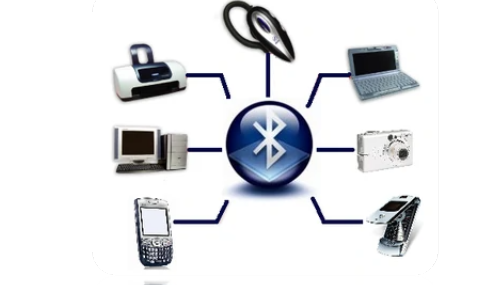 |
| LAN | Hasta 1 km | 10 Mbps - 10 Gbps | Ethernet, WiFi | Red de oficina o casa 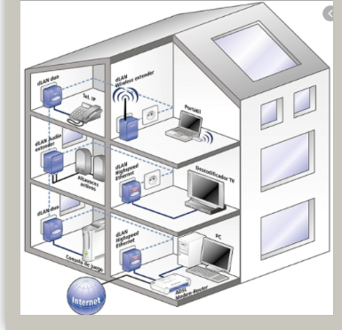 |
| CAN | Cubre varios edificios dentro de un campus (1-5 km). | 1 Gbps- 10 Gbps | MFibra óptica, Ethernet, WiFi | Universidad con redes separadas en facultades, conectadas a un núcleo central. 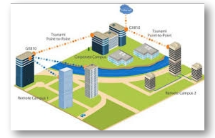 |
| MAN | Ciudad entera | 1 Gbps - 100 Gbps | Fibra óptica, Metro Ethernet | Red universitaria 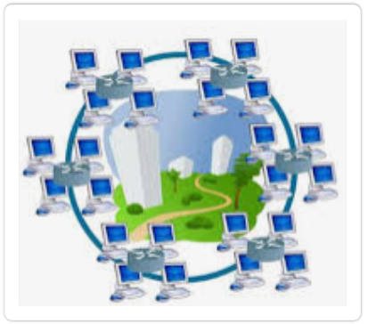 |
| WAN | Países/Continentes | 1 Mbps - 100 Gbps | MPLS, Frame Relay, Satélite | Internet
|
La topología de red define cómo están interconectados los dispositivos:
| Topología | Ventajas | Desventajas | Uso Típico |
|---|---|---|---|
| Estrella | Fácil administración, fallos localizados | Dependencia del nodo central | Redes domésticas, oficinas 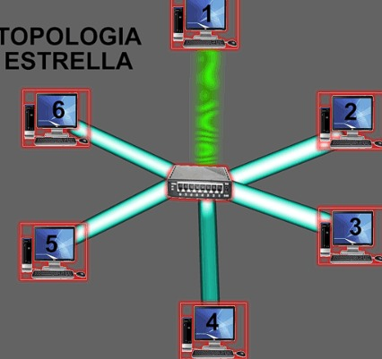 |
| Anillo | Rendimiento consistente | Un fallo afecta toda la red | Redes token ring (obsoleto) 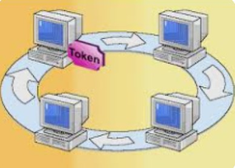 |
| Doble anillo | Tolerancai a fallos | Mayor complejidad | Redes token ring (obsoleto) 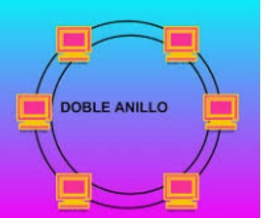 |
| Bus | Simple, bajo costo | Difícil diagnóstico de fallos | Redes antiguas (10Base2) 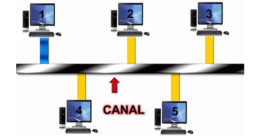 |
| Malla | Alta redundancia | Costo elevado | Redes críticas, militar 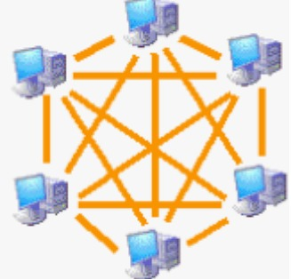 |
| Árbol | Escalable | Dependencia de raíz | Redes empresariales 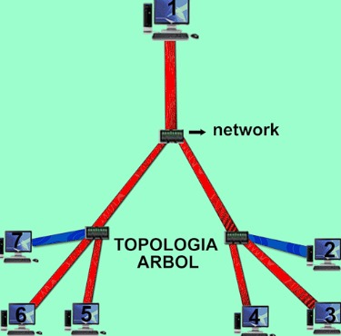 |
| Híbrida | Adaptabilidady flexibilidad | Complejidad y mantenimiento | Redes token ring o redes empresariales jerárquicas 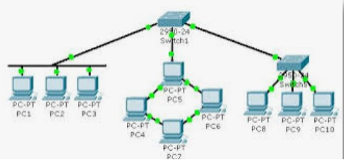 |
Los cables son el medio físico que transporta las señales en una red:
| Tipo | Descripción | Uso | Velocidad |
|---|---|---|---|
| UTP (Unshielded Twisted Pair) | Sin blindaje, pares trenzados | Redes Ethernet | Hasta 10 Gbps |
| STP (Shielded Twisted Pair) | Con blindaje metálico | Entornos industriales | Hasta 10 Gbps |
| FTP (Foiled Twisted Pair) | Blindaje general | Entornos con interferencias | Hasta 10 Gbps |
| Pin | T568A | T568B |
|---|---|---|
| 1 | Blanco/Verde | Blanco/Naranja |
| 2 | Verde | Naranja |
| 3 | Blanco/Naranja | Blanco/Verde |
| 4 | Azul | Azul |
| 5 | Blanco/Azul | Blanco/Azul |
| 6 | Naranja | Verde |
| 7 | Blanco/Marrón | Blanco/Marrón |
| 8 | Marrón | Marrón |